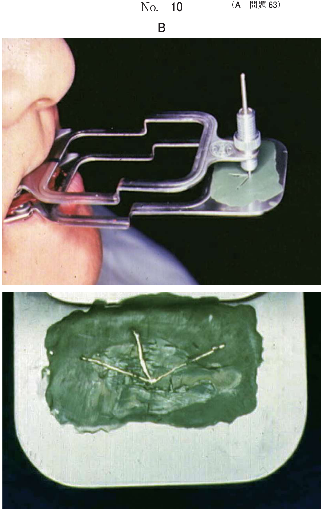

齲蝕予防
齲蝕原因菌の母子感染
ミュータンスレンサ球菌は主に母親（養育者）から感染する。
- 感染の窓：生後19〜31か月が最も感染しやすい
- 予防：保護者の齲蝕原因菌を減らすことが有効
年齢別口腔清掃指導（頻出）
| 年齢 | 指導対象 | 部位・方法 | ポイント |
|---|---|---|---|
| 0〜1歳 | 保護者 | 乳前歯部 | ガーゼで前歯部を拭き、徐々に歯ブラシに慣れさせる |
| 1〜2歳 | 保護者 | 上顎前歯部 | 寝かせ磨き、歯磨きが楽しいことを教える |
| 2〜3歳 | 保護者 | 乳臼歯咬合面 | 寝かせ磨き、転倒に注意（歯ブラシを持たせる場合） |
| 4〜5歳 | 保護者＋小児 | 乳臼歯隣接面 | 小児がブラッシング、保護者が仕上げ磨き、フロス使用 |
| 6〜7歳 | 保護者＋小児 | 第一大臼歯咬合面 | 第一大臼歯萌出完了まで保護者が点検磨き、一歯磨き |
| 8〜9歳 | 小児（保護者に説明） | 第一大臼歯隣接面、歯頸部 | 自分でしっかり磨く習慣をつける |
- スクラッビング法：歯面に直角にあて水平往復運動
- フォーンズ法（描円法）：円を描くように動かす
スティルマン法は成人向け（歯肉マッサージ目的）
フッ化物応用法
| 方法 | 濃度 | 適応年齢 | 頻度 |
|---|---|---|---|
| フッ化物歯面塗布 | 2% NaF（9,000 ppmF） | 乳歯萌出直後〜 | 年2〜4回 |
| フッ化物洗口 | 0.05〜0.2% NaF | 4歳頃〜（ブクブクうがいができる） | 毎日〜週1回 |
| フッ化物配合歯磨剤 | 1,000 ppmF以下 | 全年齢 | 毎日 |
歯磨剤の使用量
- 2歳未満：米粒大
- 2〜6歳：グリーンピース大
フッ化物洗口は1歳4か月児には不適（ブクブクうがいができない）
初期齲蝕への対応
| 所見 | 対応 |
|---|---|
| 白斑・白濁（実質欠損なし） | フッ化ナトリウム塗布、フッ化物洗口指導、ブラッシング指導 |
| 小窩裂溝の深い溝 | 予防填塞（シーラント） |
| 歯内歯などの形態異常 | 予防填塞 |
過去問
幼児への齲蝕原因菌の定着を抑制するのに適切なのはどれか。1つ選べ。
b 子ども一人で間食をとる。
c 保護者の齲蝕原因菌を減らす。
d 消毒薬で子どもに口をゆすがせる。
e 保護者がマスクをつけて仕上げ磨きを行う。
【解説】ミュータンスレンサ球菌は主に母親から感染するため、保護者の齲蝕原因菌を減らすことが幼児への感染予防に有効。感染の窓は生後19〜31か月。
小児の口腔清掃指導に関する組合せで適切なのはどれか。2つ選べ。
b 2〜3歳：保護者：ガーゼ磨き
c 4〜5歳：保護者、本人：スクラビング法
d 6〜7歳：保護者、本人：第一大臼歯の一歯磨き
e 8〜9歳：本人：スティルマン法
【解説】4〜5歳では保護者と本人でスクラッビング法が適切。6〜7歳では萌出中の第一大臼歯の一歯磨きが重要。0〜1歳はガーゼ（フロスは不適）、2〜3歳は歯ブラシ（ガーゼは0〜1歳）、スティルマン法は成人向け。
2歳児の保護者への口腔清掃指導で正しいのはどれか。3つ選べ。
b スクラッビング法で行う。
c 仕上げは寝かせ磨きで行う。
d 子どもが使う歯ブラシで仕上げを行う。
e 子どもが歯ブラシを持っている時は転倒に注意する。
【解説】2歳児にはスクラッビング法、寝かせ磨きが適切。歯ブラシを持たせる場合は転倒に注意。歯間ブラシは成人向け（小児はフロス）。仕上げ用の歯ブラシは子ども用とは別に用意する。
1歳4か月の幼児。人工乳を摂取している。齲蝕予防指導として適切なのはどれか。すべて選べ。
b 歯磨き習慣
c フッ化物洗口
d 規則的食生活
e 糖アルコールの推奨
【解説】1歳4か月児には離乳の完了、歯磨き習慣、規則的食生活が適切。フッ化物洗口は4歳頃から（ブクブクうがいができる年齢）。糖アルコール（キシリトール等）の推奨は齲蝕予防の主たる指導ではない。
11歳の女児。下顎左側第一大臼歯の近心面の白濁を主訴として来院した。昨日、下顎左側第二乳臼歯が脱落した際に気付いたという。白濁部に実質欠損は認めない。初診時の口腔内写真（別冊No.32）を別に示す。適切な処置はどれか。1つ選べ。

b 予防填塞
c フッ化ナトリウム塗布
d コンポジットレジン修復
e フッ化ジアンミン銀塗布
【解説】白濁で実質欠損がない初期齲蝕にはフッ化ナトリウム塗布で再石灰化を促進。予防填塞は小窩裂溝が対象。CR修復は実質欠損がある場合。フッ化ジアンミン銀は着色するため前歯には不適。
10歳の女児。上顎右側側切歯の凹みが気になり来院した。自発痛と冷温痛はみられない。歯髄電気診で正常反応を示した。検査の結果、ある処置を行うこととした。初診時の口腔内写真（別冊No.17A）、エックス線画像（別冊No.17B）及びラバーダム装着時の口腔内写真（別冊No.17C）を別に示す。適切な処置はどれか。1つ選べ。


b 直接覆髄
c 生活歯髄切断
d 抜 髄
e 感染根管治療
【解説】歯内歯（盲孔）で症状がなく歯髄電気診正常であれば予防填塞が適応。盲孔は齲蝕リスクが高いため、シーラントで封鎖する。歯髄処置は必要ない。